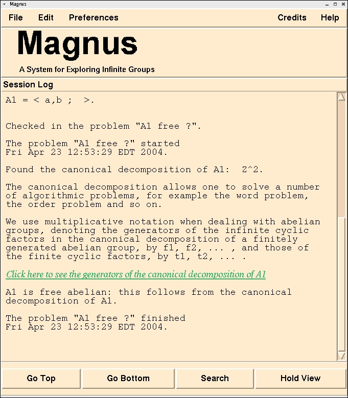

Magnus
A System for Exploring Infinite Groups
[prev]
[home]
[next]
An Example Session
Result Recorded in the Session Log
Notice also that the Session Log has been updated with the results. It
It contains information about how it solved the problem as well as a link
to the canonical decomposition it found to prove that
the group is free abelian.

[prev]
[home]
[next]